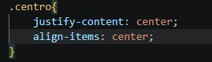

Mi primer pasatiempo es ver series
Ver series en Netflix y Amazon Prime es uno de mis pasatiempos favoritos porque me ayuda a relajarme.
Series que estoy viendo
- Malcom in the Middle
- Jujutsu Kaisen
- Another

Top 3 géneros que más me gustan
- Suspenso
- Terror
- Fantasía
Series favoritas
- Malcom in the Middle
- Trata sobre la vida de Malcolm y su familia caótica y divertida.
- Jujutsu Kaisen
- Narra la historia de Yuji Itadori y su lucha contra maldiciones.
Serie que más me gusta
Me gusta el suspenso porque siempre mantiene la atención.
Tráiler de una serie
Código CSS del contenedor
Eso centra las tarjetas.
